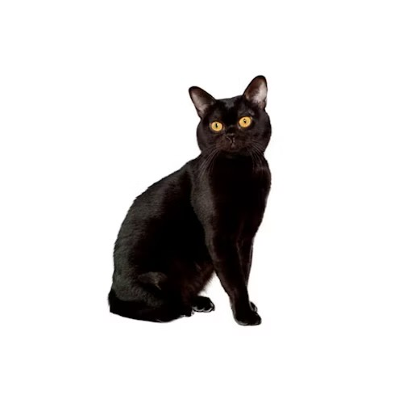
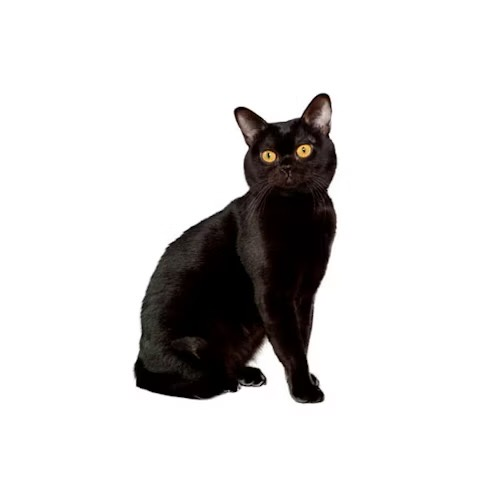
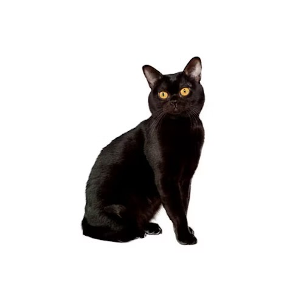

Breeds


 



The cat (Felis catus), commonly referred to as the domestic cat or house cat, is a small domesticated carnivorous mammal. It is the only domesticated species of the family Felidae. Recent advances in archaeology and genetics have shown that the domestication of the cat occurred in the Near East around 7500 BC. It is commonly kept as a house pet and farm cat, but also ranges freely as a feral cat avoiding human contact. Valued by humans for companionship and its ability to kill vermin, the cat's retractable claws are adapted to killing small prey like mice and rats. It has a strong, flexible body, quick reflexes, and sharp teeth, and its night vision and sense of smell are well developed. It is a social species, but a solitary hunter and a crepuscular predator. Cat communication includes vocalizations like meowing, purring, trilling, hissing, growling, and grunting as well as cat body language. It can hear sounds too faint or too high in frequency for human ears, such as those made by small mammals. It secretes and perceives pheromones.

The domestic cat is a member of the Felidae, a family that had a common ancestor about 10 to 15 million years ago. The evolutionary radiation of the Felidae began in Asia during the Miocene around 8.38 to 14.45 million years ago. Analysis of mitochondrial DNA of all Felidae species indicates a radiation at 6.46 to 16.76 million years ago. The genus Felis genetically diverged from other Felidae around 6 to 7 million years ago. Results of phylogenetic research shows that the wild members of this genus evolved through sympatric or parapatric speciation, whereas the domestic cat evolved through artificial selection. The domestic cat and its closest wild ancestor are diploid and both possess 38 chromosomes and roughly 20,000 genes.
The average lifespan of pet cats has risen in recent decades. In the early 1980s, it was about seven years, rising to 9.4 years in 1995 and an average of about 13 years as of 2014 and 2023. Neutering increases life expectancy; one study found castrated male cats live twice as long as intact males, while spayed female cats live 62% longer than intact females.   Having a cat neutered confers some health benefits, such as a greater life expectancy and a decreased incidence of reproductive neoplasia. However, neutering decreases metabolism and increases food intake, both of which can cause obesity in neutered cats. Pre-pubertal neutering (neutering at 4 months or earlier) was only recommended by 28% of American veterinarians in one study. Some concerns of early neutering were metabolic, retarded physeal closure, and urinary tract disease related.